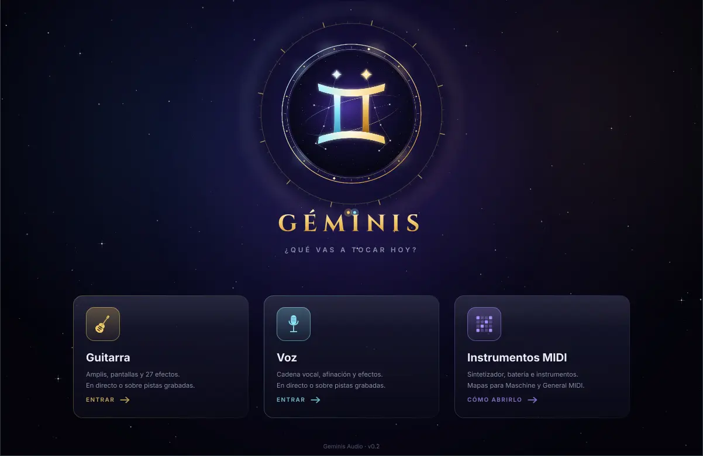
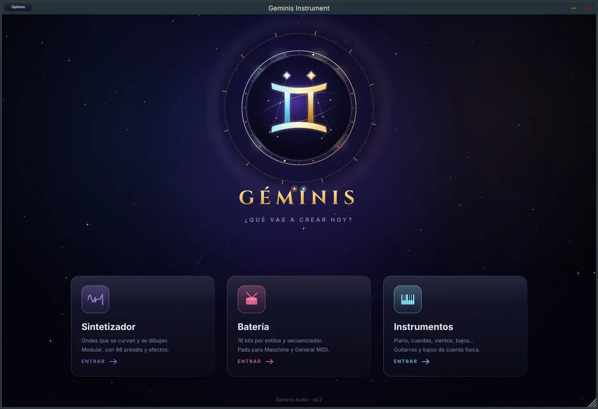
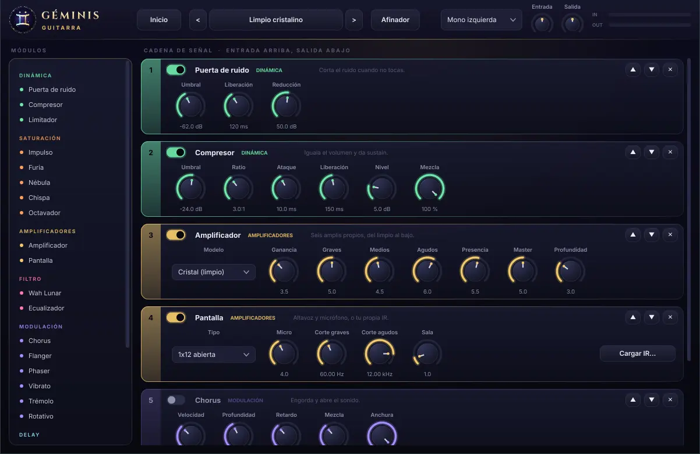
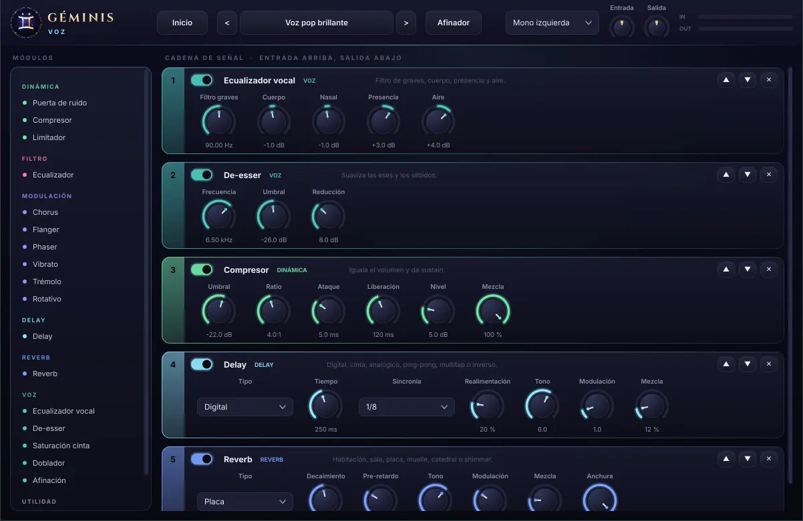
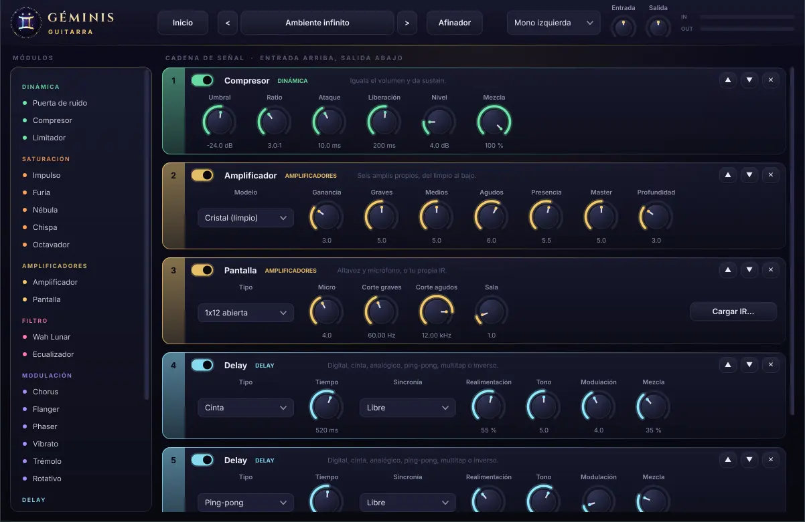
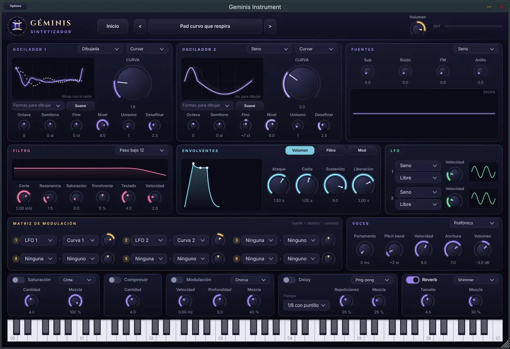
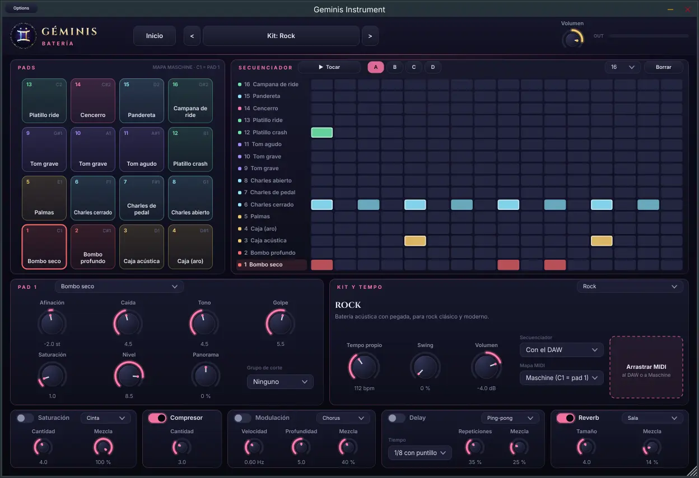
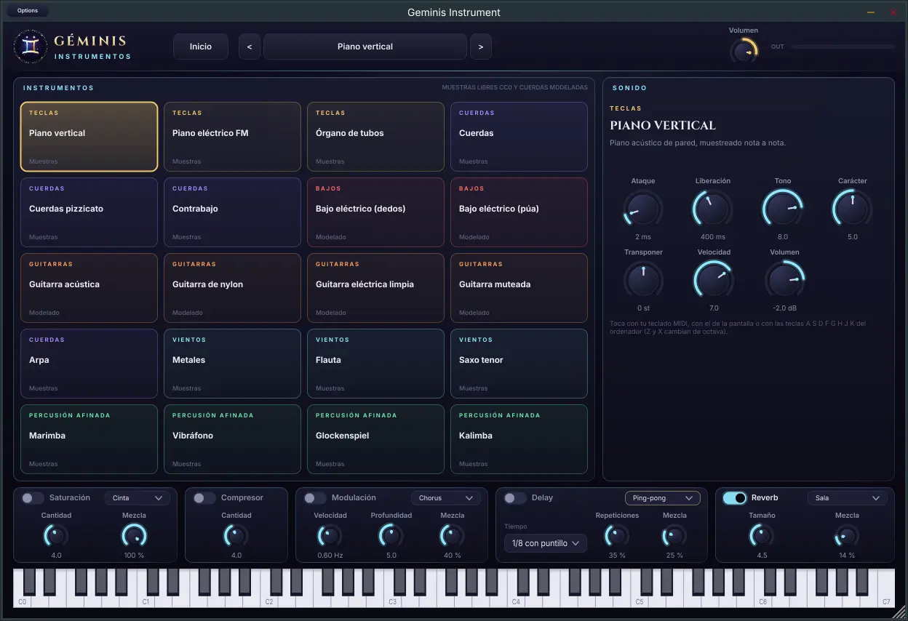

GÉMINIS
SUITE DE AUDIO
Dos plugins gemelos para hacer música entera: un rack de guitarra y voz con amplis, pedales, delays y reverbs, y un instrumento con sintetizador de ondas que se curvan, batería por estilos e instrumentos reales.
Te pregunta qué vas a crear hoy
Cada plugin arranca con una pantalla animada del emblema y te deja elegir el modo. No hay menús escondidos: eliges y estás tocando.


Tu pedalera entera en diez huecos
Pones Geminis FX en una pista de audio y montas la cadena que quieras: 27 módulos en el orden que elijas. Puedes poner dos delays y tres reverbs a la vez, cada uno distinto. Sirve en directo con monitorización o sobre pistas ya grabadas.

Escucha los amplis
La misma guitarra pasada por tres amplis de Geminis FX, sin retoques.

Modo Voz
Una cadena pensada para cantar: limpia, controla las eses, iguala el volumen y da aire. Con doblador para engordar coros y afinación para corregir sin que se note.

- Afinador siempre a mano en la barra superior.
- Entrada mono o estéreo, eligiendo el canal izquierdo o derecho de tu interfaz.
- Carga tus propias IR en la pantalla o usa las respuestas propias incluidas.
- Tus presets se guardan en Documentos/Geminis/Presets FX.
Una onda que se dobla mientras suena
El sintetizador de Géminis parte de once ondas y las curva. El mando CURVA las dobla y el timbre cambia según las doblas. Pruébalo aquí: mueve el mando, cambia la manera de curvar o dibuja tu propia onda con el ratón o el dedo.
Una muestra de lo que hace el oscilador del plugin. En Geminis Instrument hay dos, con unísono de hasta 7 voces, sub, ruido, FM y modulación en anillo.

Sintetizador modular
- Cinco maneras de curvar sobre once ondas de partida, o una onda tuya.
- Filtro de cinco tipos con saturación, tres envolventes y dos LFO sincronizables.
- Matriz de 6 modulaciones. En muchos presets la rueda de modulación curva la onda.
- Efectos: saturación, compresor, chorus, phaser, flanger, delay y reverb.
- 66 presets: bajos, leads, pads, teclas, secuencias, industrial, futuristas, clásicos analógicos y ondas dibujadas.
16 kits, cada uno con su estilo y su tempo

16 pads con el pad 1 abajo a la izquierda, como en Maschine. Elige el mapa MIDI de Maschine (pad 1 = C1, nota 36) o General MIDI. Secuenciador de 16 o 32 pasos con acentos y swing, y arrastra el patrón como MIDI a tu DAW.
18 sonidos sintetizados y 29 acústicos grabados. Cada pad tiene afinación, caída, tono, golpe, saturación, panorama y grupo de corte.
20 instrumentos para completar la canción
Con muestras grabadas
- Piano vertical
- Piano eléctrico FM
- Órgano de tubos
- Cuerdas y pizzicato
- Contrabajo y arpa
- Metales y flauta
- Saxo tenor
- Marimba, vibráfono, glockenspiel y kalimba
De cuerda física
- Bajo eléctrico con dedos
- Bajo eléctrico con púa
- Guitarra acústica
- Guitarra de nylon
- Eléctrica limpia
- Eléctrica muteada

Funciona donde ya haces música
VST3 en Windows y macOS, AU en macOS, y los dos plugins también como programa independiente para tocar sin abrir el DAW.
En todos los modos
- Teclado en pantalla y teclado del ordenador (A S D F G H J K; Z y X cambian de octava).
- Ventana escalable del 60 % al 140 %.
- Limitador suave a la salida para no saturar nunca el DAW.
Con Maschine
- Carga Geminis Instrument en un Sound.
- Los pads siguen el orden de Maschine.
- Arrastra los patrones como MIDI.
Programa independiente
- Pide 44100 Hz por defecto.
- Recuerda tu interfaz de audio y tu MIDI.
- Entrada silenciada al empezar para que no se acople.
Géminis Suite 0.3
Un solo instalador trae los dos plugins y los dos programas.
Windows
Instalador clásico: copia los VST3 a Common Files, crea accesos en el menú Inicio y se desinstala desde «Aplicaciones instaladas».
macOS
VST3 y AU para Logic, Ableton, Cubase o Maschine, más los dos programas independientes.
El instalador aún no está firmado. Si Windows avisa con «Windows protegió su PC», pulsa «Más información» y luego «Ejecutar de todas formas». Después, vuelve a buscar plugins en tu DAW.